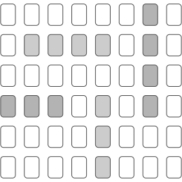
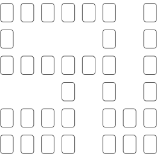
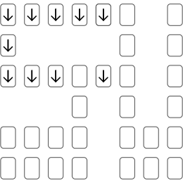
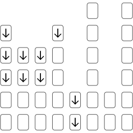
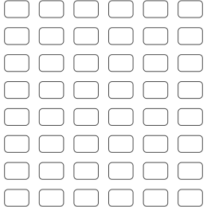

WetIce
WetIce is a competitive two player match three style puzzle game designed to be playable with only a standard pack of cards.
Required: One standard pack of 52 cards and enough playing space to
lay them out in an 8 by 6 grid.
SETUP
Remove all four Kings and all jokers.
You should be left with 48 suit cards.
Shuffle and deal the cards in front of you face
up in a grid:
8 cards wide and 6 cards high
Only the suit matters so ignore the face value of the cards.
Match 3 or more cards of the same suit in a line.
Horizontally and vertically but never diagonally.
CLEANUP PHASE
Take turns to remove all matches on the board before you start a game.
Each player performs one swap of any two cards on the grid.
After the two cards are swapped, there must be less matches on the board than there was before.
Alternatively a player may pass.
Once both players agree that all matches have been removed by passing, the game begins.
The last player to make a swap during this phase is the first
player to take a turn when the game begins.
GAME
Players take turns.
Each turn consists of one SWAP followed by multiple MATCH and FALL phases.
See below for more detailed descriptions of these three phases.
SWAP
Swap any two cards.
This swap must create a line of 3 or more cards of the same suit, horizontally or vertically.
You may pass to skip a turn regardless of whether you can perform a
valid swap or not.
MATCH
Remove any lines of 3 or more cards of the same suit.

If this is a new suit, it goes into your score pile.
Otherwise it goes to the player who already has that suit in their score pile.
If you have more than two suits in your score pile, any extra suits must be given to your opponents score pile.
You can give your opponent any extra suits - it does not have to be the suit that you just removed from the board.
Ultimately, each player will have 2 suits each.
Any future cards removed from the board will go to the score pile of
the player with the corresponding suit, regardless of who removes
them.
FALL
Apply gravity.
Slide down all cards that are not on the bottom row or held up by a card below them.

Once all cards have been slid down, go back to MATCH phase and remove any new matches.
You can chain score multiple times from a single SWAP.
This MATCH and FALL cycle is repeated until there are no more matches to remove or cards to fall.
If there are no cards to fall down or match, your turn is over and
it is now your opponents turn.
GAME OVER
When both players pass, usually because no more valid moves can be made, the game is over.
Your score is the number of cards in your score pile.
Highest score wins.
MISTAKES
There are times where both players pass because no moves can be made only to notice later that a match was missed by either player.
If this is the case, remove and score the match as normal during the
next MATCH phase of your turn even if it has just been sitting
there unnoticed.
ALTERNATIVE LAYOUT
For a slightly harder and more volatile challenge, rotate the board around so it is 6 wide and 8 high with the cards on their sides.
This makes gravity have more of an effect (each column is 8 high) so it
is a bit harder to manage chain reactions.
SINGLE PLAYER GAME
The single solitaire player game is played the same as the two player game but you take all of the turns.
And instead of two separate score piles, the objective is to remove all cards from the board. The more cards you remove, the better you played.
If you can remove all the cards on the board, you are the winner.
SINGLE PLAYER NEW GAME PLUS
For a more challenging game, try the NG+ rules:
Remove as many cards as possible in groups of 4 or more.
Keep cards removed in matches of three separate to cards removed in matches of four or more.
You win when you clear the board and if your pile of four plus
cards contain more cards than your pile of three.